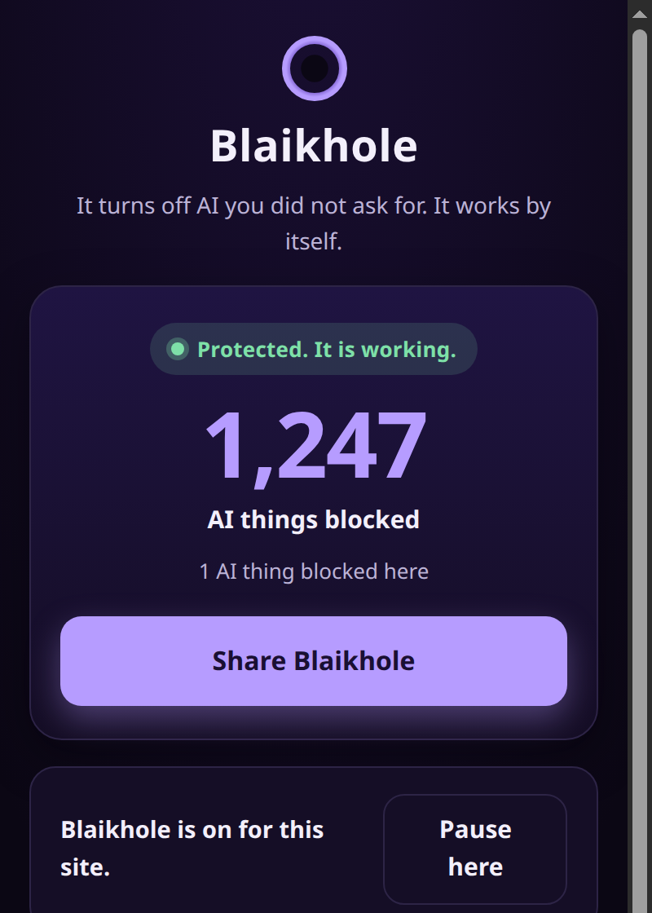

Block at the source
On Google, DuckDuckGo, Brave, and Qwant, Blaikhole flips the switch that turns AI off on the server. The overview never loads. No flash, nothing left to hide.
Free. Open. No account. No tracking.
The AI you never asked for, gone. Search engines, feeds, marketplaces. Blaikhole swallows the AI overviews, the assistant panels, and the generated slop, and lets nothing escape into your view.
Blocks at the source. Hides the rest. Never guesses. Coming to the Firefox and Chrome stores.
You did not opt in. Every search, every feed, every store now shoves AI at you, and its whole reason for being is to replace the people who made the web worth reading. Blaikhole is the opt out. Install it once and take your attention back.
On Google, DuckDuckGo, Brave, and Qwant, Blaikhole flips the switch that turns AI off on the server. The overview never loads. No flash, nothing left to hide.
Assistant panels and AI slop with no off switch get hidden by how they are built, on stable structure, not guesswork. Blaikhole keeps up as pages change.
It never tries to decide whether some writing "is AI". That is a false positive machine, and we refuse to ship it. It targets known AI surfaces by how they are built, full stop.
One click on the toolbar and you see exactly what Blaikhole caught on the page, and how much it has swallowed since you installed it.

On by default. Turn any of it back on with one tap, or allow it on just one site.
The extension is AGPL-3.0, the filter list is CC-BY-4.0. No pro tier, no pay to whitelist, no ads. Trust is the whole product.
No account. No tracking. It works on its own, offline. Everything stays on your machine, and we never see any of it.
The filter list is open for any tool to adopt. The more people who use it, the faster it catches what is new. A commons, not a moat.
Yes. Free and open source, forever. No subscription, no "pro" tier, no ads, no paid whitelisting. The only ask is a quiet, optional link to make a free account.
No. No account, no analytics, no telemetry, nothing sent anywhere. It works offline and everything stays on your device. The code is open, so you can check.
Firefox, Chrome, and the Chromium browsers (Brave, Edge, Opera, Vivaldi). Store listings are on the way; for now you can build it from the source.
It targets known AI surfaces by how they are built, and never guesses whether text "is AI", so false positives are rare. If something looks off, one tap pauses it on that site.
Of course. Turn any category back on everywhere, or allow one surface on just one site. Your attention, your rules.